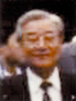
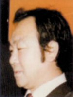
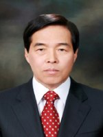
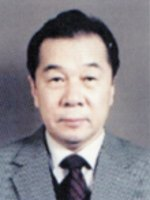
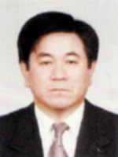
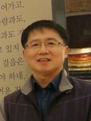
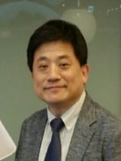
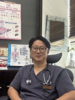

외과동문회
외과동문회는 1976년에 발족했습니다. 현재 회장은 제24대 전병무 동문회장입니다.
역대 동문회장
 제1대이한길1976 ~ 1977
제1대이한길1976 ~ 1977
제2대이사헌1978 ~ 1979 제3대김광태1980 ~ 1981
제3대김광태1980 ~ 1981 제4대김봉오1982 ~ 1983
제4대김봉오1982 ~ 1983 제5대박원혁1984 ~ 1985
제5대박원혁1984 ~ 1985 제6대김현근1986 ~ 1988
제6대김현근1986 ~ 1988 제7대이보연1989 ~ 1990
제7대이보연1989 ~ 1990
제8, 9대김익명1991 ~ 1994 제10, 11대정진원1995 ~ 1998
제10, 11대정진원1995 ~ 1998
제12, 13대김영춘1999 ~ 2002
제14대김옥길2003 ~ 2004
제15대김상묵2005 ~ 2006 제16대이용배2007 ~ 2008
제16대이용배2007 ~ 2008 제17대이봉석2009 ~ 2010
제17대이봉석2009 ~ 2010 제18대최흥식2011 ~ 2012
제18대최흥식2011 ~ 2012 제19대이준2013 ~ 2014
제19대이준2013 ~ 2014
제20대최창순2015 ~ 2016 제21대송형섭2017 ~ 2018
제21대송형섭2017 ~ 2018
제22, 23대이종호2019.03 ~ 2024.12
제24대전병무2025.01 ~ 현재